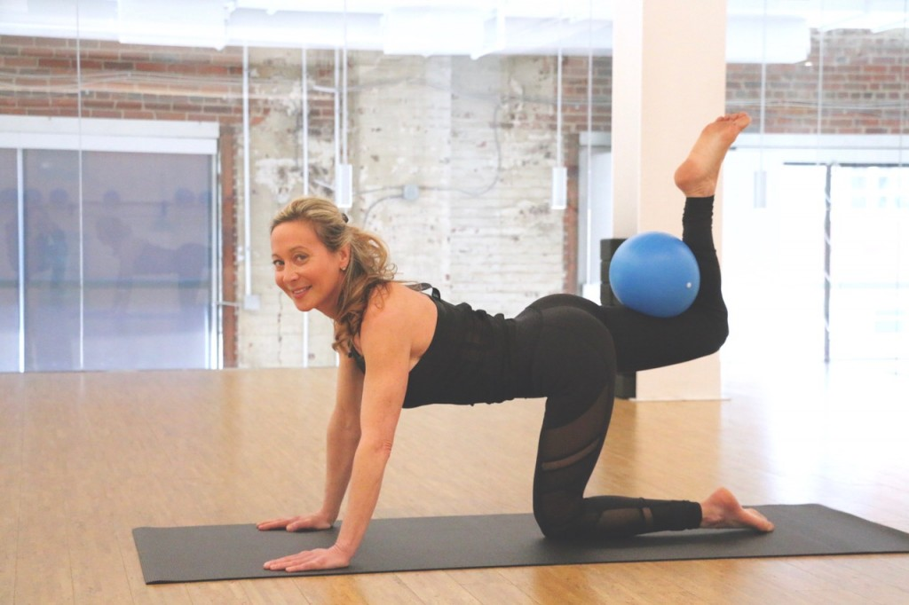

Integrative Bodywork Private Sessions with Stephanie Rhodes
Integrative bodywork sessions combine elements of thai bodywork, yoga therapy, and Reiki to alleviate pain, shift movement/holding patterns and energy flow, and support overall wellness through release in the body. Rather than digging in to an issue through aggressive deep tissue massage or trigger point release, this work gently encourages the body to unwind old habits and re-pattern to relieve both acute and chronic issues.
$125 per one hour session. Member rate: $115 per session. To sign up for your first session or to learn more, please email info@mpoweryogastudio.com or call us at 410-534-YOGA
JULY 28, 2018
Human Connection and the Mind Body Experience
I find myself continually driven to understand and support the human experience. Personally, I developed this curiosity when overcoming adversity and seeing how experiences that led to me feel isolated were actually opportunities to connect and rebuild. As humans, we celebrate successes, honor milestones, cultivate relationships, nurture wounds, grieve losses, face loneliness, ride the rollercoaster of hope, manage fear, and feel love. There is a range of emotions that arises from these experience that can sometimes be intense and overwhelming and can impact us in profound ways. And what triggers emotions can be different for each of us. While a trigger of anxiety may leave me feeling helpless, there is most likely someone else close by, possibly even right next to me, whose trigger was completely different yet who experiences the same emotion. It’s ironic that a feeling that can be so isolating can be so common. Professionally, my curiosity guided me to becoming a Licensed Clinical Professional Counselor where I began to support others in developing their mental wellness and assist them in understanding their needs within the contextual factors that shape their world. When a person is only identified by their behaviors and symptoms, we miss a larger picture of understanding that person within these dimensions, or areas of intersectionality, that contribute to who they are. In addition to considering a person’s DNA, temperament and pre-dispositions (“nature”), it is important to consider a person’s experiences as well (“nurture”). But we don’t just look at a person’s childhood to understand how the person has become who s/he is today. Categories such as race, gender, ethnicity, education, sexuality, ability, age, migration status, class, language and culture, can assist in understanding how these interwoven factors impact all of us. While these factors identify our differences, they can also help to soften our judgment of others and help us to acknowledge the aspects of the human experience that are universal and can bond us together. We don’t have to have the same events happen in each of our lives in order to understand or support each other. When we judge a person based on a select behavior, observation or interaction, we miss the opportunity to understand that person. I may be distracted in a yoga class by a student tapping her hand repeatedly on the mat next to me. My mind may initially go to a place of superficial judgment (“she’s so annoying and isn’t considering others around her”) that only agitates me more and creates a separation between myself and my fellow yogini. Did you know that restlessness can be related to ADHD? What if I told you that it’s also a possible symptom of anxiety? Did you know it could be indicative of trauma? Or what if someone is just having a really bad day and is preoccupied with an unhelpful thought or feeling? Maybe the student is musically inclined and is loving the class playlist! Had you considered any of those factors before judging an entire person based on one moment? It is an incredibly challenging process to stop an initial judgment and consider the contextual factors of a person. When we judge, we isolate. When we stop to understand, we have the opportunity to become inclusive, caring and kind with ourselves and with others. Yoga helped me to bridge my personal and professional experiences and find deeper meaning both on and off the mat. I learned that there is a difference between knowing and doing. An instructor can simply direct students to let go of unhelpful feelings, think positive thoughts, or breathe deeply, but has anyone acknowledged that this is a lofty task?!?! Sometimes there are days where we perseverate, hold onto stressful situations, and engage in negative self-talk. Sometimes, for a range of physical, mental or emotional reasons, it is hard to take a deep breath. This has the potential to stifle a practice and be discouraging for a yogi. Sometimes having a “just do it” attitude can be empowering and gives perspective when excuses and avoidable barriers get in the way of progress. On the other hand, sometimes taking time to recognize and acknowledge the barriers can assist in overcoming these challenges. I’d like to inspire the community by bringing to light the experiences that have the tendency to isolate with the opportunity to connect. What if it’s possible to feel a little less lonely knowing that others are experiencing the same range of human experiences. And what if the added awareness could be a small addition to our growth as individuals and as a community in a meaningful way. Several years ago, I received valuable feedback at a time when I wasn’t performing to the expectations of my job or really myself. The feedback was: you make the time for what’s important to you. I was forced to confront the common excuse of not having time and the idea that there is a difference between what is urgent and what is important. It’s easy to mindlessly fall into the pattern of addressing what is urgent and in your face. There are the reactive “fires” we put out that leave our body and mind in a heightened state of arousal. We tend to give ourselves the minimum amount of recovery time before jumping in to fight the next fire or flee from the next overwhelming obstacle, or freeze in the face of danger. This is when the emotional part of our brain is overworked and the rational thought part of our brain goes into hibernation. What that leaves us with is the decreased ability to think rationally and problem solve effectively. So how does yoga fit in to all of this? When we can develop our physiological awareness, we can train our body to self-soothe and de-escalate when triggered. In doing so, we calm the overactive emotional brain and put it in balance with the cognitive part of our brain in order to achieve an equilibrium and more clearly see what’s important to us. There are postures that can support this de-escalation of arousal when activated. Conversely, there are postures to activate when our responses include unnecessary and unhelpful disconnecting and slowing. We can train our body using breath and asanas to have an impact on our brain which affects our overall physical health, mental wellness and behavioral functioning. Join me on June 3rd from 7-9pm to learn more about mindfulness and the mind-body connection. Come with any range of a subtle curiosity to a full open heart to explore how these concepts are impacting you, and how you can use them both on and off your mat. About Alison White: Alison White has her 200 hour RYT training. She is also a Licensed Clinical Professional Counselor and has been working in the field of behavioral health since 2005. Alison finds opportunities to combine physical health with mental wellness both as a yoga instructor and mental health therapist. She was exposed to yoga from a very early age by her grandmother, Alison’s original yoga guru.
SEPTEMBER 28, 2017
Bring a Friend Fridays!
Share your favorite studio with the ones you love. Come practice Yoga or Barre with us on any Friday in September and bring a friend or family member for FREE!
AUGUST 26, 2017
ONGOING MEMBER SPECIAL
Lock in a special rate of only $99 per month if you commit to a membership during your 30 day trial at M.Power. Don’t wait: After the 30 days membership price goes up by $20 to $119!
SEPTEMBER 28, 2017October Membership Drive
Sign up for unlimited membership and get your choice of a FREE M.Power mat or a FREE Yogitoes mat towel. While supplies last. Inquire at the desk with your instructor to sign up.
SEPTEMBER 28, 2017Barre Breakdown with Michelle B: Staggered First Position
It doesn’t take a Ballerina to gain long, lean, strong legs! Start: While standing forearm distance away from the barre, place your left foot in front of your right with your left heel touching your toes. Up for a challenge in this pose? Test your balance by placing one hand or both on your hips or straight up into the air. Continue reading »
AUGUST 3, 2017Get to know Michelle Biro!
What led you to become a Barre instructor? Growing up I was always into athletics (really just any way to move my body!) and breaking a daily sweat. Whether it was running 35+ miles a week for cross-country or sprinting over hurdles on a track, I wanted to get moving. This amount of mileage and stress at a young age unfortunately led to three bulging and rotated discs in my back by the age of 16. Luckily enough for me, this also led me to test out my first Pilates Class. Continue reading »
AUGUST 3, 2017
Finding My Mindful Moments

For as long as I can remember, I’ve been a competitor. I know, that’s not something you’d expect to hear from a yoga instructor, but stay with me. When I first started taking yoga, it was all about achieving the best pose, pushing myself, and “mastering” yoga. It’s taken me several years, but my yoga journey has taught me that I had it all wrong. Continue reading »
JULY 5, 2017Get to know Amber Fox
What led you to become a Yoga instructor? I wanted to be a yoga instructor for years, but always seemed to find an excuse to put it off. I’m so happy that I finally just did it and became an instructor. Yoga has been a balm for my soul through so many different times in my life – it brings me back to my true self and allows me the space to be creative and open to new adventure. Continue reading »
JULY 5, 2017Posture clinic with Amber Fox: Bird of Paradise

One of my all-time favorites, especially for summertime! Continue reading »
JULY 5, 2017Finding My Meaningful Connections
The M. Power foundation that resonates the most with me is Meaningful Connections. Connecting with people is something I aspire to do every day; in doing so aids me in learning more about others but ultimately learning more about myself. The connections you make with others can sometimes bring a whole new experience to your life. New connections can aid you in your personal journey, the journey to Self. Continue reading »
JUNE 2, 2017Posture Clinic with Sally Kowalczyk: Gluteus medius exercise, aka, The Jane Fonda
(start with either right or left leg) Right leg: Lay down on your left side. Bring your left hand under your left ear to rest the weight of your head, OR lay your left arm flat to the mat and your head may rest on your left arm. Bring both legs up into a chair position on the mat. Make sure your shoulders stack over your hips, and your hips are in line with both knees. Bring your right hand to the mat in front of your chest to use as leverage once the exercise begins. Keep your knees in line, as you draw your right leg (top leg) straight (knee over knee). Rotate this foot so your toes point down towards the floor and your heel rotates up towards the ceiling. Keep this foot flexed. Exercises in this pose: isometric holds, pulses, point the toe and draw circles in both directions.
JUNE 2, 2017Get to know Sally Kowalczyk!
What led you to become a Yoga instructor? · I always knew I’d eventually find my way into the health/fitness industry. From my childhood through my adolescent years, I was dancing, cheering, swimming, or playing lacrosse. I was always sharing the best new workout fads with friends and family and from an early age I always knew I had a passion to teach. The past 5 years I have actively practiced yoga to increase my strength, stability and balance. After years of playing high impact sports, such as lacrosse, I find that both yoga and barre are still challenging but much kinder to my body. Continue reading »
JUNE 2, 2017It Pays to Practice
M•Power is now partnered with Perkville to reward you for doing what you love! You could now earn $1 for every class you take and $5 for every friend you refer to M•Power that takes class. Here’s how classes and referrals will get you cash rewards to spend at M•Power:
| Classes | Reward | Referrals | Reward |
| 10 | $10 | 2 | $10 |
| 18 | $20 | 4 | $20 |
| 40 | $50 | 8 | $50 |
| 70 | $100 | 14 | $100 |
Posture Clinic with Ali Blais: Mermaid Pose
Mermaid Posture Clinic Set sail for Mermaid Pose, on a journey that will open your hips as it lengthens your back into a gorgeous arch.
Downward Facing Dog
Press your heels to the mat Ground down through your knuckles Point all 10 fingers toward the front of the mat Turn the eyes of your elbows forward Bring your ears in line with your biceps Shine the upper part of your chest forward Relax your Shoulders down your back Continue reading »
MAY 8, 2017Get to know Ali Blais!

What led you to become a Yoga instructor? After years of not truly knowing what I wanted to do with my life, and working in a job that was good but not what I loved day in and day out; I reflected on what really made me happy, and that is yoga. With a background in non-profit, helping people was very important to me and being a Yoga instructor melds together my passions of physical and mental wellness with the ability to make a difference in the lives of others. Continue reading »
MAY 2, 2017Finding my inner Moxie
When I look back over the past 5 years of my yoga journey, Moxie is the M.Power foundation that stands out the most to me. I stepped onto my mat for the first time back in 2012, not knowing what to expect and a little nervous. I had no idea the journey I was about to embark upon. All I knew was after my first class, I had never felt so relaxed in my life and I needed to continue learning more. Continue reading »
MAY 2, 2017Get to know Stacey Dorsey!
What led you to become a Barre Instructor: I’ve always had a passion for group fitness classes, especially HIIT Burn and TABATA classes. When I got my cert in Barre I thought it would be great to incorporate my ACE personal training experience and group fitness classes with BARRE. One day I just walked into M POWER studio and asked the Owner Jason Herd for a chance! He set me up for a demo with the manager Michelle and here I am! I love teaching Barre at M Power because they allow us to have creativity with each class we teach. Most studios make you follow a choreograph for months, but M Power allows each instructor to bring something different to the table with their classes. Continue reading »
APRIL 3, 2017Posture Clinic: Forearm Stand (Pincha Mayurasana)

Get grounded. From downward facing dog, drop to your knees. Place your forearms on top of one another to measure the distance of your foundation. Your right fingertips should be touching your left elbow and vice versa. Place your forearms down on the mat. Press your palms down onto the mat. Curl your toes under and lift your hips to the ceiling. Feel your weight here. Press down with your forearms and engage your arm muscles. Continue reading »
MAY 2, 2017Get to know Becca Larson!
What led you to become a yoga instructor? First and foremost, a love of yoga. I immediately loved the way yoga made me feel. Empowered, beautiful, confident, connected. There is nothing else like it. After developing a consistent practice it didn’t take long for me to want to teach. I just wanted to dive deeper into the waters of yoga. I wanted to know more about it and share how yoga made me feel with other people. Continue reading »
MARCH 12, 2017Making a difference – Just as you are.

Why? I spend most of my day in pursuit of the answer to this question. Innate curiosity urges me to question and analyze everything. I want to know why people behave the way they do and then my brain wants to dissect it to find patterns. It might seem contradictory to the way of yoga. Yoga is a discipline that asks us to clear our minds and be present for our experience. Many times with the worthy goal of calming the fluctuations of the mind, I have tried to deny that persistent questioning and analysis. I have tried to plug up the channels in my mind that lead me to always ask, why. For me, this leads to failure, insecurity, and yet another why question: why can’t I just let things be? Continue reading »
MARCH 12, 2017Get To Know Mytri Sundaresh!
What led you to become a yoga instructor? I picked up yoga in college as a means of exercise that was more accessible, for me, then going to the gym and using weight machines. My main goal when I started yoga was to build strength, I was too flexible and had come close to suffering serious injuries because my muscles weren’t holding my joints together tight enough. After years of doing yoga I wanted to deepen my practice which led me to enter Yoga Teacher Training. I actually did not think that I wanted to teach yoga when I first started the training. It wasn’t until we started teaching each other, and then taught our beginner yogi friends, that I became inspired to teach yoga. Continue reading »
JANUARY 3, 2017Posture Clinic: Revolved Triangle (Parivrtta Trikonasana)

Posture Clinic: Revolved Triangle (Parivrtta Trikonasana) Revolved triangle is a great way to tone the core/hips, lengthen the spine, and improve digestion. If you have any hip or back issues work slowly and mindfully, being sure not to over exert yourself. Continue reading »
FEBRUARY 6, 2017Motivating Through Creativity.
“We are what our thoughts have made us: so take care about what you think. Words are secondary. Thoughts live and travel far” – Swami Vivekananda The arts have always played an important role in my life. As a child I was surrounded by family members who were accomplished musicians, dancers, painters, and writers. Continue reading »
FEBRUARY 6, 2017Get To Know Krista Darrell!
What led you to become a yoga instructor? I picked up yoga in college as a means of exercise that was more accessible, for me, then going to the gym and using weight machines. My main goal when I started yoga was to build strength, I was too flexible and had come close to suffering serious injuries because my muscles weren’t holding my joints together tight enough. After years of doing yoga I wanted to deepen my practice which led me to enter Yoga Teacher Training. I actually did not think that I wanted to teach yoga when I first started the training. It wasn’t until we started teaching each other, and then taught our beginner yogi friends, that I became inspired to teach yoga. Continue reading »
JANUARY 3, 2017What Mindful Movement Means To Me
For more than just safety reasons, I believe ‘mindful movement’ is one of the most integral things you can focus on to grow your practice. To me, mindful movement is what takes place in-between each posture as well as the adjustments we make once in a posture and it is facilitated by the breath. Continue reading
JANUARY 3, 2017Get to know Kate Manchester!
What led you to become a yoga instructor? My yoga practice became consistent after a hip injury that required me to take around 8 months off of any activity. Yoga is what I credit for healing my body, but what I didn’t anticipate was a flooding of other things in my life that weren’t healed, specifically processing the loss of my mom to breast cancer when I was 15. My desire to share this practice with others was building and I, specifically, wanted to bring it to breast cancer survivors as healing is yearned for both physically and emotionally. Continue reading »
DECEMBER 17, 2016Mindful Movement.
I’d like to believe that each time my body meets my yoga mat that my practice beautifully unfolds into a rhythmic dance strung together through unrestricted and graceful movement. Bahahaha! While that would be lovely there is a brilliant reason it is called a “practice”, and that practice requires the intention of mindfulness, on REPEAT. Continue reading »
DECEMBER 17, 2016Tools For Finding Peace- A Reflection On Teacher Training.
Our 10 week 200 hour Yoga Alliance certified teacher training begins February 18th, 2017! This program will empower you to live your most inspired life and give you the tools to help others do the same. Katie Landgrebe, a graduate of our 2016 program, shared her personal experience with us and how it helped her find inner peace and calm. Continue reading »
NOVEMBER 19, 2016Give the Gift of Yoga
Looking for the perfect gift idea? Give your friends and family the gift of Yoga this holiday season! Purchase a $130 GIFT CARD for just $100, or a $65 GIFT CARD for just $50. Visit the front desk for more information or to purchase. Happy Gifting!
NOVEMBER 19, 2016Practice with M.Power online at Burnalong.com!
Wherever life finds you, practice with the friends and M.Power instructors who motivate you. Burnalong is an online platform that enables you to exercise with your friends during recorded classes offered by M.Power instructors like Dani, Kristin, Jason or Jermain. We are very excited to be a part of the Burnalong community and representing them in the Baltimore area for yoga. Learn more and sign up at Burnalong.com!
NOVEMBER 13, 2016Meaningful Connections.
I have to say that the notion of MEANINGFUL CONNECTIONS is truly what brought me to MPower to begin with. Through our vibrant yoga community, I was introduced to Jason Herd. We chatted yoga, goals and life stories for a few hours. MPower wasn’t open yet, in fact I think construction had just begun. But Jason took a chance on me and after interviewing with him and Michelle, they offered me a teaching position. Talk about a meaningful connection. Continue reading »
NOVEMBER 12, 2016Get to know Nila Mechali!
What led you to become a yoga instructor? I believe that yoga was brought to me. I was in a sad confusing place in my life and came across a postcard to try power vinyasa. It felt like a calling, so I went for it. A few months into my new hot practice, the teacher announced a teacher training – my heart dropped in utter fear so I knew in that moment I had to sign up. My life changed – empowerment through vulnerability – I am so grateful and so blessed to pass on this ancient practice. Continue reading »
OCTOBER 31, 2016Posture Clinic: Half Moon Pose
On our first day of yoga teacher training, we were asked what our three most difficult poses (read: LEAST FAVORITE) were. At the time, headstand was my main nemesis, with Ardha Chandrasana – AKA Half Moon Pose, coming in a close second. Continue reading »
OCTOBER 12, 2016Get to know Elyza Dolby!
What led you to become a yoga instructor? At the end of my 25th year, I was spending a lot of time on my mat. I was unhappy in a lot of areas of life, but also actively making changes towards improving for the first time I could ever recall. I had been interviewing for my “dream job”, and bombed in the home stretch; as I laid in Savasana bawling my eyes out, I realized that yoga was the one area of my life that made me feel ALIVE, and I needed more of it. I decided on a 200-hr training in Costa Rica mainly to deepen my practice, and wasn’t sure I’d ever teach, but after about six months back in Baltimore, my real “dream job” started showing up everywhere in my life… And here I am. Continue reading »
OCTOBER 7, 2016October Membership Special!
Hey M.Power Yogis! Ready to recommit to your practice this fall? There’s never been a better time to do it. Sign up for our unlimited membership in the month of October and get a FREE yoga mat to jumpstart your practice. Don’t forget your first month of membership is also discounted to only $79 per month. Member’s also receive FREE rental mats and towels, 10% off our retail boutique, and FREE Moxie Sessions every month designed to help you deepen your practice. Email us at info@mpoweryogastudio.com for more info or inquire after class with your instructor.
OCTOBER 1, 2016Get To Know Robin Morris!
What led you to become a yoga instructor? I was experiencing some depression and decided I needed to find a spiritual path. Growing up I never went to church regularly so spirituality was missing from my life. As my training progressed I discovered all of the wonderful things yoga can do for the mind AND the body. I think most people go into yoga for the physical benefits but grow in the opposite direction. Continue reading »
AUGUST 31, 2016Posture Clinic: Wheel Pose
I am really into wheel these days. It opens my front hip flexors, heart, shoulders and upper back. In wheel the head falls below the heart and therefore you receive the benefits of an inversion. Continue reading »
AUGUST 31, 2016Slow Down and Move Mindfully
The speed at which we live our lives puts our brain into a high gear: we tend to make decisions and movements in life without clear intention. Much of the time we go through the motions and they don’t have a lot of meaning. This spans from our physical actions (changing the radio station, eating a meal, folding laundry), to our words (conversations between family, friends and co-workers), to our inner dialogue (the thoughts that move through our head). Continue reading »
AUGUST 31, 2016Get to know Dana Robert!
What led you to become a yoga instructor? I use to live a VERY intense life. I was a trader at the Chicago Board of Trade and was boxing with a boxing coach three times a week. The repetitive movement of hitting the bags and my opponents lead to over use of my shoulder ligaments. Like over used rubber bands the elasticity in my shoulders were shot. The doctors thought it was the end of my workout career and a double surgery was a part of my future. I used yoga to rehab my shoulders and never needed surgery. I was addicted right from the start. Continue reading »
JULY 31, 2016